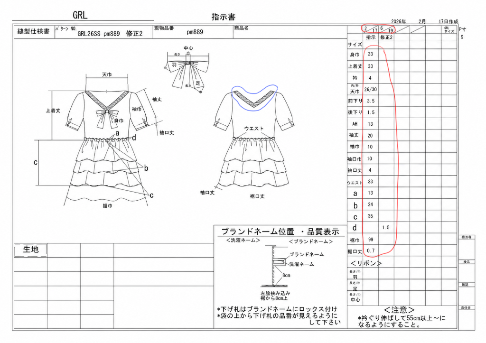

01
元PDFファイルをJPG画像に変換・分割する
PDFのままだとChatGPTがうまく読み込めないため、まずはPDFをJPG画像に変換・分割します。
SmallpdfでJPG変換 ➔
02
ChatGPTに1枚目の画像を送り、デザイン修正を指示する
1枚目のJPG画像をChatGPTにドロップし、【画像を作成】をクリックして以下のテキストを入力します。
ChatGPT指示テキスト
こちらのニット仕様書のデザインを修正したいです。
絵型を、
[変更内容を記載]
その内容に合わせて指示書の寸法なども変更お願いします。
それ以外の内容やデザインはそのままで、仕様書修正を作成お願いします。
💡 伝わる指示のコツ：
・寸法の自動調整: 上記のように指示すると、ChatGPTが変更内容に合わせて類推して数字を自動的に調整してくれます（厳密ではありません）。変更内容に合わせて指示をアレンジしてみてください。
・マーキング指示: 1回でうまくいかない場合は、右図のように元画像に直接「赤線」「青線」などで修正箇所を囲み、「赤線で囲んだ部分を空欄にして」「青線で囲んだ部分をUネックに変えて」など、画像とテキストを合わせて指示すると非常に効果的です。

図：直接ペイント等でマーキングした指示画像例
(クリックで拡大表示)
(クリックで拡大表示)
03
2枚目がある場合、続けて絵型の差し替えを指示する
指示書に2枚目がある場合は、2枚目のJPG画像をドロップし、以下のテキストを入力します。
ChatGPT指示テキスト
先程作成した絵型を、こちらの仕様書にも使用したいです。前後の絵型を、先程作成したものに差し替えてください。それ以外の内容やデザインはそのままで、仕様書修正を作成お願いします。